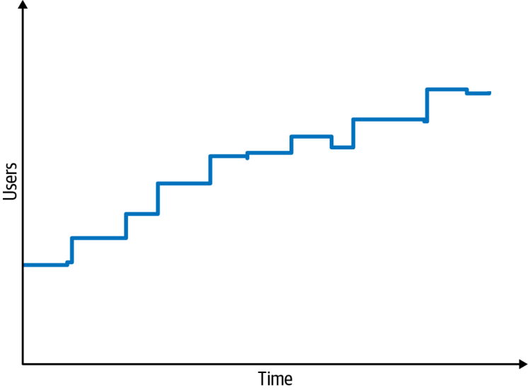

برای خلقِ یک معماری یا سنجیدنِ اعتبارِ معماریِ موجود، معماران باید دو چیز را تحلیل کنند: ویژگیهای معماری و حوزه. همانطور که در فصل ۴ دیدید، شناساییِ ویژگیهای معماریِ درست (همان «-ilities») برای یک مسئله یا برنامهٔ معین فقط به درکِ مسئلهٔ حوزه محدود نمیشود؛ معمار باید با ذینفعان نیز همکاری کند تا روشن شود چه چیزی از منظرِ حوزه بهراستی اهمیت دارد.
دستکم سه منبع برای کشفِ ویژگیهای معماریِ موردنیازِ یک پروژه وجود دارد: دغدغههای حوزه (domain concerns)، الزاماتِ پروژه و دانشِ ضمنیِ شما از حوزه (implicit domain knowledge). پیشتر اشاره کردیم که افزون بر ویژگیهای نامشهودِ عمومی، مانند امنیت و ماژولاریتی، برخی حوزهها ویژگیهای نامشهودِ خاصِ خود را نیز دارند. برای نمونه، معماری که روی نرمافزارِ پزشکیای کار میکند که دادهها را از تجهیزاتِ تشخیصی میخواند، باید از پیش اهمیتِ یکپارچگیِ داده (data integrity) و پیامدهای احتمالیِ ازدسترفتنِ پیامها را بداند. معمارانی که در این حوزه کار میکنند یکپارچگیِ داده را درونی کردهاند، چنانکه این ویژگی در هر راهکاری که طراحی میکنند بهطور نامشهود حاضر است.
استخراجِ ویژگیهای معماری از دغدغههای حوزه
بیشترِ ویژگیهای معماری از گوشسپردن به ذینفعانِ کلیدیِ حوزه و همکاری با آنان به دست میآیند تا مشخص شود چه چیزی از منظرِ کسبوکار اهمیت دارد. شاید این کار ساده به نظر برسد، اما مشکل اینجاست که معماران و ذینفعانِ حوزه به زبانهای متفاوتی سخن میگویند. معماران از مقیاسپذیری، همکنشپذیری، تحمل خطا، یادگیریپذیری و در دسترسبودن حرف میزنند؛ ذینفعانِ حوزه از ادغام و تملک (mergers and acquisitions)، رضایتِ کاربر (user satisfaction)، زمانِ عرضه به بازار (time to market) و مزیتِ رقابتی (competitive advantage). نتیجه مسئلهای از جنسِ «گمشدن در ترجمه» است: معمار و ذینفعِ حوزه حرفِ یکدیگر را نمیفهمند. معماران نمیدانند چگونه معماریای بسازند که از رضایتِ کاربر پشتیبانی کند، و ذینفعانِ حوزه نمیفهمند چرا معماران اینقدر بر در دسترسبودن، همکنشپذیری، یادگیریپذیری و تحمل خطای برنامه پافشاری میکنند.
خوشبختانه میتوان دغدغههای حوزه را به زبانِ ویژگیهای معماری «ترجمه» کرد. جدول ۵-۱ برخی از رایجترین دغدغههای حوزه را همراه با «-ilities» پشتیبانِ هر یک نشان میدهد. درکِ اهدافِ کلیدیِ حوزه به معمار امکان میدهد آن دغدغهها را به «-ilities» ترجمه کند و همین ترجمه پایهٔ تصمیمات معماریِ درست و موجه میشود. برای نمونه، آیا دغدغهٔ زمانِ عرضه به بازار از مقیاسپذیری مهمتر است، یا معمار باید بر تحمل خطا، امنیت یا کارایی تمرکز کند؟ شاید هم سیستم به ترکیبی از همهٔ این ویژگیها نیاز داشته باشد.
جدول ۵-۱. ترجمهٔ دغدغههای حوزه به ویژگیهای معماری
کارایی (Performance)، در دسترسبودن (Availability)، تحمل خطا (Fault tolerance)، آزمونپذیری (Testability)، استقرارپذیری (Deployability)، چابکی (Agility)، امنیت (Security)
مزیتِ رقابتی (Competitive advantage)
چابکی (Agility)، آزمونپذیری (Testability)، استقرارپذیری (Deployability)، مقیاسپذیری (Scalability)، در دسترسبودن (Availability)، تحمل خطا (Fault tolerance)
زمان و بودجه (Time and budget)
سادگی (Simplicity)، امکانپذیری (Feasibility)
ویژگیهای معماریِ مرکب
هنگامِ ترجمهٔ دغدغههای حوزه به ویژگیهای معماری، یکی از دامهای رایج برقراریِ همارزیهای نادرست (false equivalences) است؛ مثلاً یکیدانستنِ چابکی فقط با زمانِ عرضه به بازار. چابکی نمونهای از ویژگی معماریِ مرکب (composite architectural characteristic) است: ویژگیای که هیچ تعریفِ عینیِ واحدی ندارد و از چیزهای سنجشپذیرِ دیگری تشکیل شده است. هیچ معیاری برای سنجشِ مستقیمِ چابکی وجود ندارد، پس معماران باید بپرسند: چابکی از چه اجزایی ساخته شده است؟ این اجزا چیزهایی مانند استقرارپذیری (deployability)، ماژولاریتی و آزمونپذیریاند که همگی سنجشپذیرند.
ضدالگویی رایج زمانی پدید میآید که معماران، اغلب از سرِ راحتی، تنها بر یک جزء از ویژگیِ مرکب تمرکز میکنند. این کار به فراموشکردنِ آرد در خمیرِ کیک میماند. برای نمونه، یک ذینفعِ حوزه ممکن است چنین بگوید: «به دلیلِ الزاماتِ قانونی، مطلقاً ضروری است که قیمتگذاریِ پایانِ روزِ صندوقها (end-of-day fund pricing) را بهموقع به پایان برسانیم.»
معمارِ ناکارآمد ممکن است فقط بر کارایی تمرکز کند، چون به نظر میرسد کانونِ اصلیِ این دغدغهٔ حوزه همین است. اما این رویکرد به دلایلِ بسیاری شکست میخورد:
اگر سیستم هنگامِ نیاز در دسترس نباشد، سرعتش هیچ اهمیتی ندارد.
با رشدِ حوزه و ایجادِ صندوقهای بیشتر، سیستم باید بتواند مقیاس بگیرد تا پردازشِ پایانِ روز را بهموقع تمام کند.
سیستم نهتنها باید در دسترس باشد، بلکه باید قابلِ اطمینان هم باشد تا هنگامِ محاسبهٔ قیمتهای پایانِ روزِ صندوقها از کار نیفتد.
اگر سیستم درست وقتی از کار بیفتد که قیمتگذاریِ پایانِ روز ۸۵٪ پیش رفته است، چه میشود؟ سیستم باید بتواند بازیابی شود و قیمتگذاری را از همان نقطهای که متوقف شده بود از سر بگیرد.
و سرانجام، سیستم شاید سریع باشد، اما آیا قیمتِ صندوقها درست محاسبه میشود؟
بنابراین این معمار، افزون بر کارایی، باید به همان اندازه بر در دسترسبودن، مقیاسپذیری، قابلیت اطمینان، بازیابیپذیری و ممیزیپذیری (auditability) تمرکز کند.
بسیاری از اهدافِ کسبوکار در آغاز به شکلِ ویژگیهای معماریِ مرکب پدیدار میشوند. تجزیهٔ آنها و دادنِ تعریفهای عینی به ویژگیهای حاصل، بخشی از کارِ معماران است. (اهمیتِ این موضوع را در فصل ۶ خواهیم دید.)
استخراجِ ویژگیهای معماری
بیشترِ ویژگیهای معماری از گزارههای صریح در نوعی سندِ الزامات (requirements document) به دست میآیند. برای نمونه، فهرستِ دغدغههای حوزه معمولاً شمارِ صریحِ کاربرانِ موردانتظار و مقیاسِ سیستم را در بر دارد. ویژگیهای دیگر از دانشِ ذاتیِ معماران دربارهٔ حوزه سرچشمه میگیرند (و این یکی از دلایلِ فراوانی است که هر معماری باید حوزهٔ کارِ خود را بشناسد).
برای نمونه، فرض کنید معمارِ برنامهای هستید که ثبتنامِ کلاسهای دانشجویانِ دانشگاه را مدیریت میکند. برای سادگیِ محاسبه، فرض کنید دانشگاه ۱٬۰۰۰ دانشجو و ۱۰ ساعت زمان برای ثبتنام دارد. آیا باید این فرضِ ضمنی را بپذیرید که دانشجویان بهطور یکنواخت در این ۱۰ ساعت پخش میشوند و سیستم را برای مقیاسی ثابت طراحی کنید؟ یا باید، با تکیه بر شناختِ خود از عادتها و گرایشهای دانشجویان، سیستمی طراحی کنید که از پسِ تلاشِ هر ۱٬۰۰۰ دانشجو برای ثبتنام در ۱۰ دقیقهٔ پایانی برآید؟
هر کسی که بداند دانشجویان، به همان شکلِ کلیشهایِ معروف، تا چه حد کارها را به لحظهٔ آخر میسپارند، پاسخِ این پرسش را میداند! جزئیاتی از این دست بهندرت در اسنادِ الزامات میآیند، اما همین جزئیات به تصمیمهای طراحی شکل میدهند.
خاستگاهِ کاتاهای معماری
بیش از یک دهه پیش، Ted Neward، معمارِ سرشناس، کاتاهای معماری (architecture katas) را ابداع کرد: روشی هوشمندانه که به معمارانِ نوپا امکان میدهد استخراجِ ویژگیهای معماری از توصیفهای حوزهمحور را تمرین کنند. واژهٔ کاتا (kata) ریشهای ژاپنی دارد و در آن زبان به تمرینی انفرادی در آموزشِ هنرهای رزمی گفته میشود که بر فرم و تکنیکِ درست تأکید دارد.
طراحانِ بزرگ چگونه پرورش مییابند؟ طراحانِ بزرگ، البته، طراحی میکنند.
پروژههای بزرگِ معماری زمانبرند و معماران در طولِ دورانِ حرفهایشان معمولاً شاید نیمدوجین سیستم طراحی کنند. پس چگونه باید معمارانِ بزرگ پرورش دهیم؟ کلید این است که به معمارانِ مشتاق فرصت دهیم حرفهٔ خود را تمرین کنند. Ted برای فراهمکردنِ یک برنامهٔ آموزشی، نخستین وبسایتِ کاتاهای معماری را راه انداخت؛ همان که نویسندگانِ این کتاب، Neal و Mark، آن را در وبسایتِ همراهِ کتاب به نشانیِ fundamentalsofsoftwarearchitecture.com بازنگری و بهروز کردهاند. کاتاهای معماری، وفادار به هدفِ نخستینِ خود، آزمایشگاهی سودمند برای معمارانِ مشتاق فراهم میکنند.
کار با کاتاها
فرضِ پایه این است که هر تمرینِ کاتا سه چیز در اختیار میگذارد: مسئلهای که با اصطلاحاتِ حوزه بیان شده است، مجموعهای از الزامات، و مقداری زمینهٔ تکمیلی (چیزهایی که شاید در الزامات نیایند اما بر طراحی اثر بگذارند). تیمهای کوچک در مدتی معین روی یک طراحی (شاملِ تحلیلِ ویژگیهای معماری و نمودارها) کار میکنند. سپس گروهها نتایجِ خود را به اشتراک میگذارند و رأی میدهند که بهترین معماری از آنِ کدام گروه است.
هر کاتا بخشهای ازپیشتعیینشدهای دارد:
توصیف (Description): مسئلهٔ کلیِ حوزه که سیستم میکوشد آن را حل کند.
کاربران (Users): شمار و/یا انواعِ موردانتظارِ کاربرانِ سیستم.
الزامات (Requirements): الزاماتِ حوزه (آنگونه که کاربران و کارشناسانِ حوزه انتظار دارند).
زمینهٔ تکمیلی (Additional context): نویسندگان قالبِ کاتا را در وبسایتِ یادشده با بخشی به نامِ زمینهٔ تکمیلی بهروز کردند که ملاحظاتِ مهمی را در بر دارد و تمرینها را واقعبینانهتر میکند.
خوانندگان را تشویق میکنیم که از این وبسایت برای انجامِ تمرینهای کاتای خود استفاده کنند. هر کسی میتواند یک جلسهٔ ناهارِ آموزشی (brown-bag lunch) برگزار کند تا تیمی از معمارانِ مشتاق با هم مسئلهای را حل کنند.
یک معمارِ باتجربه میتواند طراحی و تحلیلِ مصالحهها را ارزیابی کند و مصالحههای نادیدهمانده و طراحیهای جایگزین را در همان لحظه یا پس از آن به بحث بگذارد. طراحیها مفصل نخواهند بود، چون زمانِ تمرین محدود و ازپیشتعیینشده (timeboxed) است.
در ادامه، با یک کاتای معماری نشان میدهیم که معماران چگونه ویژگیهای معماری را از الزامات استخراج میکنند. به کاتای Silicon Sandwiches خوش آمدید.
کاتا: Silicon Sandwiches
توصیف: یک زنجیرهٔ سراسریِ ساندویچفروشی میخواهد افزون بر خدماتِ فعلیِ سفارشِ تلفنی، امکانِ سفارشِ آنلاین را هم فراهم کند.
کاربران: هزاران نفر، و شاید روزی میلیونها نفر.
الزامات:
کاربران بتوانند سفارش ثبت کنند و، اگر فروشگاه خدماتِ ارسال ارائه میدهد، تحویلِ حضوری یا ارسال را برگزینند.
به مشتریانی که سفارش را حضوری تحویل میگیرند، زمانِ تحویل و مسیرِ رسیدن به فروشگاه اعلام شود (این بخش باید با چند سرویسِ نقشهٔ خارجی که اطلاعاتِ ترافیک را هم در بر دارند یکپارچه شود).
در خدماتِ ارسال، پیک همراه با سفارش به سوی کاربر اعزام شود.
دسترسی از طریقِ دستگاههای موبایل فراهم شود.
تخفیفها و پیشنهادهای ویژهٔ روزانهٔ سراسری ارائه شود.
تخفیفها و پیشنهادهای ویژهٔ روزانهٔ محلی ارائه شود.
پرداخت بهصورتِ آنلاین، در فروشگاه یا هنگامِ تحویل پذیرفته شود.
زمینهٔ تکمیلی:
ساندویچفروشیها بهصورتِ فرانچایز اداره میشوند و هر کدام مالکِ متفاوتی دارد.
شرکتِ مادر برنامه دارد در آیندهای نزدیک به خارج از کشور گسترش یابد.
هدفِ شرکت بهکارگیریِ نیروی کارِ کمهزینه برای بیشینهکردنِ سود است.
با این سناریو، چگونه ویژگیهای معماری را استخراج میکنید؟ هر بخش از الزامات ممکن است در یک یا چند جنبه از معماری نقش داشته باشد (و بسیاری از بخشها هم نقشی ندارند). معمار در اینجا کلِ سیستم را طراحی نمیکند؛ هنوز باید تلاشِ چشمگیری صرفِ نوشتنِ کد برای حلِ طراحیِ حوزه شود (موضوعی که در فصل ۸ به آن میپردازیم). در عوض، به دنبالِ چیزهایی بگردید که بر طراحی، بهویژه بر ساختار، اثر میگذارند.
نخست، ویژگیهای معماریِ نامزد را به دو دستهٔ صریح و نامشهود تقسیم کنید.
ویژگیهای صریح
ویژگیهای صریحِ معماری در مشخصاتِ الزامات (requirements specification) و بهعنوانِ بخشی از طراحیِ لازم میآیند. برای نمونه، یک وبسایتِ خرید ممکن است بخواهد از شمارِ معینی کاربرِ همزمان (concurrent users) پشتیبانی کند و تحلیلگرانِ حوزه (domain analysts) این عدد را در الزامات مشخص میکنند. هر بخش از الزامات را بررسی کنید تا ببینید آیا به یک ویژگی معماری میانجامد یا نه. اما پیش از آن، پیشبینیهای سطحِ حوزه دربارهٔ معیارهای موردانتظار را در نظر بگیرید؛ همان چیزی که در بخشِ «کاربران» در کاتا آمده است.
یکی از نخستین جزئیاتی که باید توجهتان را جلب کند، شمارِ کاربران است: در حالِ حاضر هزاران نفر، و شاید روزی میلیونها نفر (این ساندویچفروشی بسیار جاهطلب است!). بنابراین مقیاسپذیری، یعنی توانِ پاسخگویی به شمارِ زیادی کاربرِ همزمان بیآنکه کارایی بهطرزِ جدی افت کند، یکی از مهمترین ویژگیهای معماری است. توجه کنید که صورتِ مسئله بهصراحت مقیاسپذیری را نخواسته، بلکه این الزام را در قالبِ شمارِ موردانتظارِ کاربران بیان کرده است. معماران اغلب باید زبانِ حوزه را رمزگشایی کنند و به معادلهای مهندسیِ آن برسند.
احتمالاً به کشسانی هم نیاز خواهید داشت، یعنی توانِ پاسخگویی به جهشهای ناگهانیِ درخواستها. این دو ویژگی اغلب یکی گرفته میشوند، اما محدودیتهای متفاوتی دارند. مقیاسپذیری به نموداری شبیه است که در شکل ۵-۱ میبینید.

شکل ۵-۱. مقیاسپذیری معیاری برای افزایشِ شمارِ کاربران در گذرِ زمان است.
در مقابل، کشسانی جهشهای ترافیک را میسنجد، همانطور که در شکل ۵-۲ نشان داده شده است.
شکل ۵-۲. سیستمهای کشسان باید در برابرِ جهشهای ناگهانیِ کاربران تاب بیاورند.
برخی سیستمها مقیاسپذیرند اما کشسان نیستند. برای نمونه، شمارِ کاربرانِ یک سیستمِ رزروِ هتل، اگر فروشِ ویژه یا رویدادی در کار نباشد، احتمالاً الگویی فصلی و پیشبینیپذیر دارد. در مقابل، سیستمِ رزروِ بلیتِ کنسرت را در نظر بگیرید. با آغازِ فروشِ بلیتهای جدید، هواداران پرشور به سایت هجوم میآورند و سیستم به درجهٔ بالایی از کشسانی نیاز پیدا میکند. سیستمهای کشسان اغلب به مقیاسپذیری هم نیاز دارند: توانِ پاسخگویی هم به جهشها و هم به شمارِ بالای کاربرانِ همزمان.
کشسانی در الزاماتِ Silicon Sandwiches نیامده است، اما همچنان باید آن را ملاحظهای مهم بشناسید. الزامات گاهی ویژگیهای معماری را آشکارا بیان میکنند، اما برخی دیگر در دلِ حوزهٔ مسئله پنهان ماندهاند. آیا ترافیکِ یک ساندویچفروشی در سراسرِ روز یکنواخت است یا در حوالیِ وعدههای غذایی جهش پیدا میکند؟ تقریباً بیگمان دومی؛ پس این ویژگی معماریِ بالقوه را شناسایی کنید.
سپس هر یک از این الزاماتِ کسبوکار را به نوبت بررسی کنید تا ببینید آیا ویژگی معماریای را ایجاب میکند یا نه:
کاربران سفارش ثبت میکنند و، اگر فروشگاه خدماتِ ارسال ارائه میدهد، تحویلِ حضوری یا ارسال را برمیگزینند.
به نظر نمیرسد پشتیبانی از این الزام به ویژگی معماریِ خاصی نیاز داشته باشد.
به مشتریانِ تحویلِ حضوری زمانِ تحویلِ ساندویچ و مسیرِ رسیدن به فروشگاه اعلام میشود (این بخش باید امکانِ یکپارچهشدن با سرویسهای نقشهٔ خارجی را که اطلاعاتِ ترافیک را هم در بر دارند فراهم کند).
سرویسهای نقشهٔ خارجی به معنای وجودِ نقاطِ یکپارچهسازی (integration points) هستند که ممکن است بر جنبههایی مانند قابلیت اطمینان اثر بگذارند. برای نمونه، فرض کنید توسعهدهندهای سیستمی میسازد که به سیستمی شخصِ ثالث (third-party) وابسته است. اگر فراخوانیهای آن سیستم شکست بخورند، قابلیت اطمینانِ سیستمِ فراخوان آسیب میبیند. از سوی دیگر، از تعیینِ بیشازحدِ ویژگیهای معماری (overspecifying) بپرهیزید. اگر سرویسِ خارجیِ ترافیک از کار بیفتد چه میشود؟ آیا سایتِ Silicon Sandwiches باید از کار بیفتد، یا فقط بدونِ اطلاعاتِ ترافیک و با کارآمدیِ اندکی کمتر به کارش ادامه دهد؟ معماران همیشه باید مراقب باشند که شکنندگیِ (brittleness) یا آسیبپذیریِ غیرضروری در طراحیها نسازند.
در خدماتِ ارسال، پیک همراه با سفارش به سوی کاربر اعزام شود.
به نظر نمیرسد پشتیبانی از این الزام به ویژگی معماریِ خاصی نیاز داشته باشد.
دسترسی از طریقِ دستگاههای موبایل فراهم شود.
این الزام عمدتاً بر طراحیِ تجربهٔ کاربریِ (user experience, UX) برنامه اثر میگذارد و به ساختِ یک برنامهٔ وبِ قابلحمل یا چند برنامهٔ وبِ بومی (native) اشاره دارد. با توجه به محدودیتهای بودجه و سادگیِ برنامه، ساختنِ چند برنامهٔ جداگانه احتمالاً زیادهروی است؛ از این رو طراحی به سوی یک برنامهٔ وبِ بهینهشده برای موبایل میرود. بنابراین شاید بخواهید چند ویژگی معماریِ مشخصِ مرتبط با کارایی تعریف کنید تا زمانِ بارگذاریِ صفحه و دیگر ویژگیهای حساس در موبایل بهینه شوند.
در چنین موقعیتهایی نباید تنها تصمیم بگیرید. با طراحانِ تجربهٔ کاربری، ذینفعانِ حوزه و دیگر طرفهای ذیعلاقه همکاری کنید تا این تصمیمها را بسنجید. برای نمونه، ممکن است کسبوکار رفتاری را لازم بداند که فقط با ساختنِ برنامههای بومی امکانپذیر است.
تخفیفها و پیشنهادهای ویژهٔ روزانهٔ سراسری ارائه شود؛ تخفیفها و پیشنهادهای ویژهٔ روزانهٔ محلی ارائه شود.
هر دوی این الزامات سفارشیسازی را هم در تخفیفها و هم در پیشنهادهای ویژه مشخص میکنند. الزامِ ۱ نیز اطلاعاتِ ترافیکِ سفارشیشده بر پایهٔ نشانیِ کاربر را ایجاب میکند. بر پایهٔ این دو الزام، شاید سفارشیپذیری (customizability) را یک ویژگی معماری در نظر بگیرید. برای نمونه، سبکِ معماریِ میکروکرنل (microkernel architectural style)، که در فصل ۱۳ به آن میپردازیم، با تعریفِ یک معماریِ افزونهای (plug-in architecture) از رفتارِ سفارشیشده بهخوبی پشتیبانی میکند. در این حالت، رفتارِ پیشفرض در هسته (core) قرار میگیرد و توسعهدهندگان بخشهای سفارشیِ اختیاری و وابسته به مکان را در قالبِ افزونهها (plug-ins) مینویسند. با این حال، یک طراحیِ سنتی هم میتواند از راهِ الگوهای طراحی (مانند Template Method) این الزام را برآورده کند. چنین دوراهیای در معماری رایج است و معماران را وامیدارد پیوسته مصالحههای میانِ گزینههای رقیب را بسنجند. برخی مصالحههای مشخص را در «طراحی در برابر معماری و مصالحهها» در صفحهٔ ۷۶ با جزئیاتِ بیشتر بررسی میکنیم.
پرداخت بهصورتِ آنلاین، در فروشگاه یا هنگامِ تحویل پذیرفته شود.
پرداختِ آنلاین نیاز به امنیت را نشان میدهد، اما هیچ چیز در این الزام سطحِ امنیتیِ بالاتری از آنچه بهطور نامشهود انتظار میرود را القا نمیکند. معماران میتوانند امنیت را یا با طراحی یا با معماری تأمین کنند؛ از این رو امنیت در این برنامه دغدغهای حداقلی در میانِ ویژگیهای معماری است.
ساندویچفروشیها بهصورتِ فرانچایز اداره میشوند و هر کدام مالکِ متفاوتی دارد.
این الزام ممکن است محدودیتهای هزینهای بر معماری تحمیل کند. امکانپذیری را با اعمالِ محدودیتهایی مانند هزینه، زمان و مجموعهمهارتهای کارکنان بسنجید تا ببینید آیا یک معماریِ ساده یا معماریِ قربانیشدنی (sacrificial architecture) توجیهپذیر است یا نه.
شرکتِ مادر برنامه دارد در آیندهای نزدیک به خارج از کشور گسترش یابد.
این الزام بینالمللیسازی (internationalization) را ایجاب میکند که اغلب بهاختصار «i18n» نوشته میشود. تکنیکهای طراحیِ فراوانی برای برآوردنِ این الزام وجود دارد و نیازی به ساختارِ ویژهای برای پشتیبانی از آن نیست. با این حال، این الزام بیگمان تصمیمهای تجربهٔ کاربری را جهت خواهد داد.
هدفِ شرکت بهکارگیریِ نیروی کارِ کمهزینه برای بیشینهکردنِ سود است.
این الزام نشان میدهد که کاربردپذیری اهمیت خواهد داشت، اما این الزام هم بیشتر به طراحی مربوط است تا به ویژگیهای معماری.
سومین ویژگی معماریای که میتوانیم از الزاماتِ بالا استخراج کنیم کارایی است: هیچکس دوست ندارد از ساندویچفروشیای خرید کند که کارایی ضعیفی دارد، بهویژه در ساعتهای اوج. با این حال، کارایی مفهومی ظریف و چندلایه است. برای چه نوعی از کارایی باید طراحی کنید؟ (ظرافتهای گوناگونِ کارایی را در فصل ۶ بررسی میکنیم.)
همچنین مهم است که اعدادِ کارایی را همراه با اعدادِ مقیاسپذیری تعریف کنید. به بیانِ دیگر، یک خط مبنا برای کارایی، مستقل از مقیاسی خاص، تعیین کنید و سپس مشخص کنید که با شمارِ معینی از کاربران چه سطحی از کارایی پذیرفتنی است. ویژگیهای معماری بارها با یکدیگر برهمکنش دارند و معماران را ناگزیر میکنند آنها را در نسبت با یکدیگر تعریف کنند.
کاتا: Silicon Sandwiches (ادامه)
ویژگیهای نامشهود
بسیاری از ویژگیهای معماری در اسنادِ الزامات مشخص نمیشوند، اما جنبههای مهمی از طراحی را میسازند. یکی از ویژگیهای نامشهودی که سیستم ممکن است بخواهد از آن پشتیبانی کند، در دسترسبودن است: اطمینان از اینکه کاربران میتوانند به سایت دسترسی داشته باشند. ویژگیای که پیوندِ نزدیکی با در دسترسبودن دارد پایداری (stability) است: اطمینان از اینکه سایت در طولِ تعاملها برقرار میماند. هیچکس دوست ندارد از سایتی خرید کند که اتصال را قطع میکند و او را ناچار به ورودِ دوباره میسازد.
امنیت در هر سیستمی بهعنوانِ یک ویژگی نامشهود حضور دارد: هیچکس نمیخواهد نرمافزارِ ناامن بسازد. با این حال، بسته به اینکه امنیت تا چه حد حیاتی باشد، ممکن است اولویتِ متفاوتی به آن بدهید؛ و همین نکته ماهیتِ درهمتنیدهٔ تعریفِ ما را نشان میدهد. امنیت را زمانی میتوانید یک ویژگی معماری به شمار آورید که بر جنبهای ساختاری از طراحی اثر بگذارد و برای برنامه حیاتی یا مهم باشد.
در مورد Silicon Sandwiches، میتوانید فرض کنید که پرداختها را یک شخصِ ثالث انجام میدهد. بنابراین تا زمانی که توسعهدهندگان اصولِ کلیِ بهداشتِ امنیتی (security hygiene) را رعایت کنند (شمارهٔ کارتِ اعتباری را بهصورتِ متنِ ساده جابهجا نکنند، اطلاعاتِ بیش از اندازه ذخیره نکنند و مانندِ اینها)، طراحیِ خوبِ برنامه کفایت میکند و برای تأمینِ امنیت به طراحیِ ساختاریِ ویژهای نیاز نخواهید داشت. به یاد داشته باشید که ویژگیهای معماری همافزا هستند: هر ویژگی معماری با دیگر ویژگیها برهمکنش دارد. به همین دلیل است که تعیینِ بیشازحدِ ویژگیهای معماری دامی چنین رایج است. تعیینِ بیشازحد به همان اندازهٔ تعیینِ کمتر از حدِ ویژگیها (underspecifying) زیانبار است، چون طراحیِ سیستم را بیش از اندازه پیچیده میکند.
آخرین ویژگی معماریِ مهمی که Silicon Sandwiches باید از آن پشتیبانی کند، یعنی سفارشیپذیری، از چند جزئیاتِ موجود در الزامات تشکیل شده است. چند بخش از حوزهٔ مسئله رفتارِ سفارشی دارند: دستورهای پخت، فروشهای محلی و مسیرهایی که ممکن است بهصورتِ محلی بازنویسی شوند. بنابراین معماری باید از رفتارِ سفارشی پشتیبانی کند. معمولاً چنین چیزی در قلمروِ طراحیِ برنامه قرار میگیرد. اما همانطور که تعریفِ ما مشخص میکند، وقتی بخشی از حوزهٔ مسئله برای پشتیبانی به ساختارِ سفارشی تکیه دارد، به قلمروِ ویژگیهای معماری وارد میشود. با این حال، این عنصرِ طراحی برای موفقیتِ برنامه حیاتی نیست. به یاد داشته باشید که در انتخابِ ویژگیهای معماری پاسخِ درست وجود ندارد و تنها پاسخهای نادرست هست؛ یا به بیانِ دیگر:
در معماری پاسخِ غلط وجود ندارد؛ فقط پاسخهای پرهزینه وجود دارد.
طراحی در برابر معماری و مصالحهها
در کاتای Silicon Sandwiches احتمالاً سفارشیپذیری را بخشی از سیستم میشناسید، اما آنگاه این پرسش پیش میآید: معماری یا طراحی؟ معماری مستلزمِ نوعی مؤلفهٔ ساختاری است، در حالی که طراحی درونِ معماری جای دارد. برای Silicon Sandwiches میتوانید سبکی معماری مانند میکروکرنل را برگزینید و برای سفارشیسازی پشتیبانیِ ساختاری بسازید. اما اگر به دلیلِ دغدغههای رقیب سبکِ دیگری را انتخاب کنید، توسعهدهندگان میتوانند سفارشیسازی را با الگوی طراحیِ Template Method پیاده کنند؛ الگویی که به کلاسهای والد امکان میدهد گردشکارهایی تعریف کنند که در کلاسهای فرزند قابلِ بازنویسیاند. کدام گزینه بهتر است؟
مانندِ همهچیز در معماری، بستگی دارد. نخست، آیا دلایلِ خوبی برای پیادهنکردنِ معماریِ میکروکرنل وجود دارد (مانند کارایی و کوپلینگ)؟ دوم، آیا تحققِ دیگر ویژگیهای معماریِ مطلوب در یکی از این دو طراحی دشوارتر از دیگری است؟ سوم، پشتیبانی از همهٔ ویژگیهای معماری در معماری، در مقایسه با پشتیبانی از آنها در طراحی، چه هزینهای دارد؟ این نوع تحلیلِ مصالحه بخشِ مهمی از نقشِ معمار است.
مهمتر از همه، همکاری با توسعهدهندگان، مدیرِ پروژه، تیمِ عملیات و دیگر همسازندگانِ (co-constructors) سیستمِ نرمافزاری حیاتی است. هیچ تصمیمِ معماریای نباید جدا از تیمِ پیادهسازی گرفته شود (کاری که به ضدالگوی هراسانگیزِ معماریِ برج عاج (Ivory Tower architecture antipattern) میانجامد). در مورد Silicon Sandwiches، معمار، سرپرستِ فنی (tech lead)، توسعهدهندگان و تحلیلگرانِ حوزه باید با هم همکاری کنند تا تصمیم بگیرند سفارشیپذیری به بهترین شکل چگونه پیاده شود.
لازم نیست برای کشفِ مجموعهٔ دقیقاً درستِ ویژگیهای معماری بیش از حد نگران باشید. توسعهدهندگان میتوانند کارکردها را به شیوههای گوناگون پیاده کنند. با این حال، شناساییِ درستِ عناصرِ ساختاریِ مهم ممکن است طراحیِ سادهتر یا ظریفتری را ممکن کند. میتوانید معماریای طراحی کنید که سفارشیپذیری را بهصورتِ ساختاری در خود جای ندهد و در عوض پشتیبانی از این رفتار را بر عهدهٔ طراحیِ خودِ برنامه بگذارد (نگاه کنید به «طراحی در برابر معماری و مصالحهها» در صفحهٔ ۷۶). به یاد داشته باشید: در معماری بهترین طراحی وجود ندارد، فقط مجموعهای کمبدترین از مصالحهها وجود دارد.
هنگامِ جستوجوی سادهترین مجموعههای لازم، این ویژگیهای معماری را اولویتبندی کنید. وقتی تیم نخستین دورِ شناساییِ ویژگیهای معماری را پشتِ سر گذاشت، تمرینِ سودمند این است که بکوشد کماهمیتترین ویژگی را پیدا کند. اگر ناچار بودید یکی را حذف کنید، کدام را حذف میکردید؟ معمولاً معماران بیشتر ویژگیهای صریح را کنار میگذارند، چون بسیاری از ویژگیهای نامشهود پشتوانهٔ موفقیتِ کلیِ سیستماند. شیوهای که با آن «حیاتی یا مهم برای موفقیت» را تعریف میکنیم، کمک میکند تشخیص دهیم آیا برنامه بهراستی به هر یک از ویژگیهای معماری نیاز دارد یا نه. تلاش برای یافتنِ کمکاربردترین ویژگی میتواند به شما کمک کند ضرورتِ حیاتیِ هر ویژگی را تشخیص دهید.
در مورد Silicon Sandwiches، کدامیک از ویژگیهای معماریِ شناساییشده کماهمیتترین است؟ باز هم پاسخِ مطلقاً درستی وجود ندارد. با این حال، در این مورد راهکار میتواند یا سفارشیپذیری را از دست بدهد یا کارایی را. میتوانیم سفارشیپذیری را از فهرستِ ویژگیهای معماری حذف کنیم و برنامه بریزیم که این رفتار را بهعنوانِ بخشی از طراحیِ برنامه پیاده کنیم. در میانِ ویژگیهای عملیاتیِ معماری، کارایی احتمالاً کماهمیتترین ویژگی برای موفقیت است. البته این به آن معنا نیست که توسعهدهندگان قصد دارند برنامهای با کاراییِ افتضاح بسازند؛ فقط به این معناست که این طراحی کارایی را بر ویژگیهای دیگری مانند مقیاسپذیری یا در دسترسبودن مقدم نمیداند.
محدودکردن و اولویتبندیِ ویژگیهای معماری
یک توصیه برای هنگامی که با ذینفعانِ حوزه همکاری میکنید تا ویژگیهای معماریِ پیشران (driving architectural characteristics) را تعریف کنید: سخت بکوشید فهرستِ نهایی تا حدِ ممکن کوتاه بماند. ضدالگویی رایج، تلاش برای طراحیِ یک معماریِ عام (generic architecture) است: معماریای که از همهٔ ویژگیهای معماری پشتیبانی کند. هر ویژگیای که معماری از آن پشتیبانی میکند طراحیِ کلیِ سیستم را پیچیدهتر میکند، پس پشتیبانی از ویژگیهای معماریِ بیش از اندازه به پیچیدگیِ روزافزون میانجامد. و این تازه پیش از آن است که معمار و توسعهدهندگان حتی به حوزهٔ مسئله، یعنی انگیزهٔ اصلیِ نوشتنِ نرمافزار، پرداخته باشند. وسواسِ شمارِ ویژگیها را نداشته باشید، اما انگیزه را به یاد بسپارید: ساده نگهداشتنِ طراحی.
مطالعهٔ موردی: Vasa
داستانِ اصیلِ تعیینِ بیشازحدِ ویژگیهای معماری تا آنجا که سرانجام پروژه را نابود کند، بیگمان داستانِ Vasa است. Vasa یک کشتیِ جنگیِ سوئدی بود که میانِ سالهای ۱۶۲۶ و ۱۶۲۸ به فرمانِ پادشاهی ساخته شد که باشکوهترین کشتیِ تاریخ را میخواست. تا آن زمان کشتیها یا ترابرِ نیرو بودند یا کشتیِ توپدار؛ Vasa قرار بود هر دو باشد. بیشترِ کشتیها یک عرشه داشتند؛ Vasa دو عرشه داشت! همهٔ توپهایش دو برابرِ توپهای کشتیهای مشابه بودند. کشتیسازانِ خبره، با وجودِ نگرانیهایی، نتوانستند به پادشاه Adolphus «نه» بگویند.
Vasa برای جشنگرفتنِ پایانِ ساخت به بندرِ استکهلم رفت و از یک سمت توپِ ادای احترام شلیک کرد. متأسفانه، چون بخشِ بالاییِ کشتی بیش از حد سنگین بود، کشتی واژگون شد و به قعرِ آب فرو رفت. در سالِ ۱۹۶۱ نجاتگران کشتی را بیرون کشیدند و اکنون در موزهای در استکهلم نگهداری میشود.
همکاریِ معمار و ذینفعانِ کسبوکار در طولِ تحلیلِ ویژگیهای معماری حیاتی است. اما اگر معمار فهرستِ مفصلی از ویژگیهای معماریِ ممکن ارائه دهد و از ذینفعانِ کسبوکار بپرسد میخواهند معماری از کدامیک پشتیبانی کند، پاسخ هر بار چه خواهد بود؟ «همهشان!»
بنابراین معماران به تکنیکی نیاز دارند تا تعیین کنند کدام ویژگیهای معماری تصمیمهای ساختاری را پیش میبرند و برای موفقیت حیاتیاند. نویسندگان چند تکنیک برای تسهیلِ این کار پروراندهاند، از جمله یک «کاربرگِ» ویژگیهای معماری (architectural characteristics worksheet) که در شکل ۵-۳ نشان داده شده است (و از نشانیِ https://developertoarchitect.com/resources.html قابلِ دریافت است).
این کاربرگ برای استفاده در یک جلسهٔ تعاملی طراحی شده است که معمار آن را اداره میکند و در آن نظرِ ذینفعان را دربارهٔ شمار و جزئیاتِ ویژگیهای معماریِ لازم جویا میشود. در سمتِ چپ، هفت جای خالی برای فهرستکردنِ ویژگیهای معماریِ موردنظر میبینید.
چرا هفت؟ چرا که نه؟ جدیتر بگوییم، معمار باید فهرست را به عددی معقول محدود کند؛ شش یا هشت هم جواب میدهد (هرچند پشتِ عددِ هفت روانشناسیِ جالبی نهفته است). ستونِ دوم چند ویژگی نامشهودِ معماری را در بر دارد؛ این ویژگیها در بیشترِ سیستمها حضور دارند، اما گاهی معماران آنها را بهعنوانِ دغدغههای پیشرانِ برنامه که طراحی و توجهِ ویژه میطلبند در اولویت قرار میدهند. در چنین مواردی، معمار ویژگیهای نامشهود را به ستونِ نخست «میکشد». اگر ستونِ نخست پر شود و موردِ بهتری پیدا شود که جای یکی از موارد را بگیرد، معمار موردِ کنارگذاشته را به دستهٔ «موارد بررسیشدهٔ دیگر» (Others Considered) منتقل میکند.
شکل ۵-۳. کاربرگِ ویژگیهای معماری.
گامِ آخر این است که سه ویژگی معماری با بالاترین اولویت، بدونِ ترتیبِ خاصی، بهصورتِ جمعی برگزیده شوند (کادرِ کنارِ هر یک را علامت بزنید). این تمرین به معماران امکان میدهد فهرستی کوتاهشده و اولویتبندیشده از نیروهای پیشران به دست آورند و از آن برای هدایتِ تصمیمهای طراحی و تحلیلِ مصالحهها استفاده کنند.
بسیاری از معماران و ذینفعانِ حوزه میخواهند به فهرستی نهایی و اولویتبندیشده از ویژگیهای معماریای برسند که برنامه یا سیستم باید از آنها پشتیبانی کند. هرچند چنین نتیجهای بیگمان مطلوب است، در بیشترِ موارد تلاشی بیهوده است که نهتنها زمان را هدر میدهد، بلکه سرخوردگی و اختلافِ نظرِ غیرضروریِ فراوانی با ذینفعانِ کلیدی به بار میآورد. بهندرت پیش میآید که همهٔ ذینفعان بر اولویتِ تکتکِ ویژگیها توافق کنند. رویکردِ بهتر این است که ذینفعانِ حوزه سه ویژگیِ مهمتر را، بدونِ ترتیبِ خاصی، از فهرستِ نهایی برگزینند. این کار رسیدن به اجماع را بسیار آسانتر میکند و بحث دربارهٔ مهمترین موارد را برمیانگیزد. همهٔ اینها به معمار کمک میکند هنگامِ گرفتنِ تصمیمهای حیاتیِ معماری، مصالحهها را تحلیل کند.